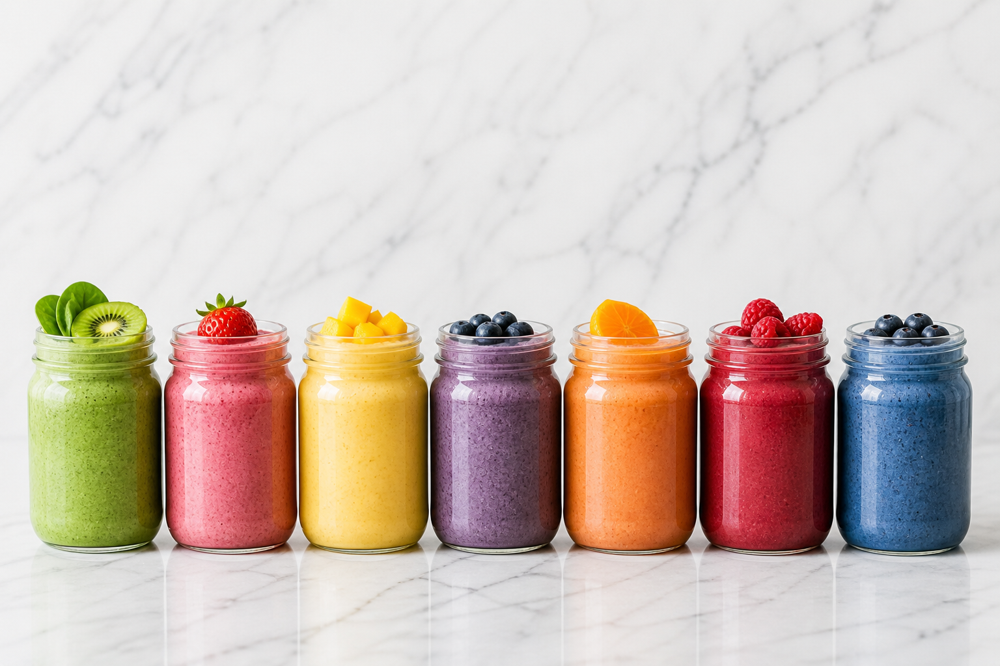

My Smoothie Meal Prep Sunday Counter Looks Like A Tiny Factory
My smoothie meal prep sunday ritual started because weekday Made is not as ambitious as Sunday Made. Sunday Made buys spinach, washes berries, lines up mason jars, and believes in the future. Weekday Made opens the fridge with one eye half closed and needs help. So every Sunday, I give her help.
I clear the kitchen counter, put on music, and line up seven mason jars like I am setting out little promises. Some jars go into the fridge, some become freezer packs, and some are just chopped fruit waiting for liquid. It takes about 20 minutes when I do not overthink it, and the feeling afterward is almost suspiciously peaceful.
How I Set Up The Ingredients
I start by pulling out every fruit and green I want to use that week. Spinach, cucumber, mango, pineapple, berries, banana, ginger, lemon, mint, and avocado are my usual suspects. I wash what needs washing, peel what needs peeling, and make little piles before anything goes into jars.
The trick is to group ingredients by texture. Frozen fruit can go straight into freezer jars. Fresh greens can be packed in tightly, but I keep watery things like cucumber and citrus for fridge jars if I plan to blend them within two days. Nut butter, chia, flax, oats, and hemp seeds go into tiny containers or right on top of the fruit.
What I Freeze And What I Refrigerate
Smoothies with berries, mango, pineapple, banana, spinach, kale, oats, chia, flax, and ginger freeze beautifully. I leave the liquid out until blending day because frozen liquid can turn the whole jar into a stubborn brick. In the morning, I dump the frozen pack into the blender, add coconut water, milk, kefir, or yogurt, and blend.
I refrigerate jars that contain cucumber, fresh herbs, citrus juice, or kefir because those taste best when they have not been frozen. Those are my Monday and Tuesday jars. The freezer jars become Wednesday through Sunday.
The Mason Jar System That Saves Me
I use wide mouth mason jars because they are easy to fill, easy to empty, and pretty enough to make the habit feel special. For freezer packs, I fill each jar about three quarters full so the fruit has room. For fridge smoothies, I sometimes blend the whole smoothie ahead and store it already finished.
A blended smoothie lasts about 24 hours in the fridge before the texture starts changing. A freezer pack lasts about two months, though mine never survive that long because I drink them. I write the liquid choice on a tiny piece of tape so I do not have to think in the morning.

My Actual Seven Smoothie Lineup
Monday is Green Detox Bliss with spinach, cucumber, banana, ginger, lemon, and coconut water because I like starting the week feeling clean. Tuesday is Tropical Power with mango, pineapple, banana, turmeric, and coconut water because Tuesday needs sunshine. Wednesday is Berry Probiotic with kefir, blueberries, strawberries, flaxseed, honey, and oats because my gut appreciates a midweek kindness.
Thursday is Matcha Lean with almond milk, matcha, banana, chia, and vanilla because I want calm focus. Friday is Peanut Butter Banana because I usually need something hearty by then. Saturday is Watermelon Mint when I want something cold and playful. Sunday is Purple Rain with acai, blackberries, pomegranate, coconut kefir, and flaxseed because Sunday deserves a little drama.
The Little Rhythm That Makes It Stick
I do not meal prep smoothies because I am naturally organized. I do it because I am naturally distractible, and I know myself. If the jar is waiting, I blend. If the ingredients are loose in the fridge, I somehow eat toast over the sink and forget the spinach exists.
That is why smoothie meal prep sunday has become one of my favorite rituals. It is not about being perfect. It is about making the good choice visible, easy, and already halfway done.
Start With Three If Seven Feels Like Too Much
Seven jars look impressive, but three jars can change your week. Prep Monday, Wednesday, and Friday. Let Tuesday be leftovers and Thursday be whatever life becomes. You do not need a rainbow counter to feel the difference.
Once you feel how nice it is to wake up with breakfast already waiting, the habit starts pulling you forward. That is the best kind of routine.
Made's Note
If your Sunday is messy, prep two jars. If your freezer is full, prep one fridge smoothie. Smoothie meal prep sunday is not a performance. It is a tiny love letter to your future morning self, and she deserves every bit of help you can give her.